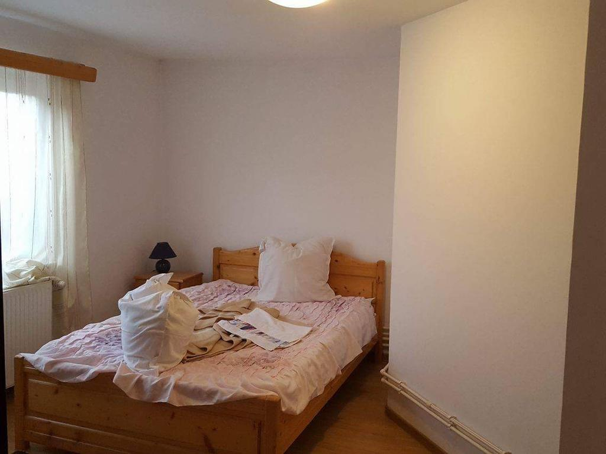
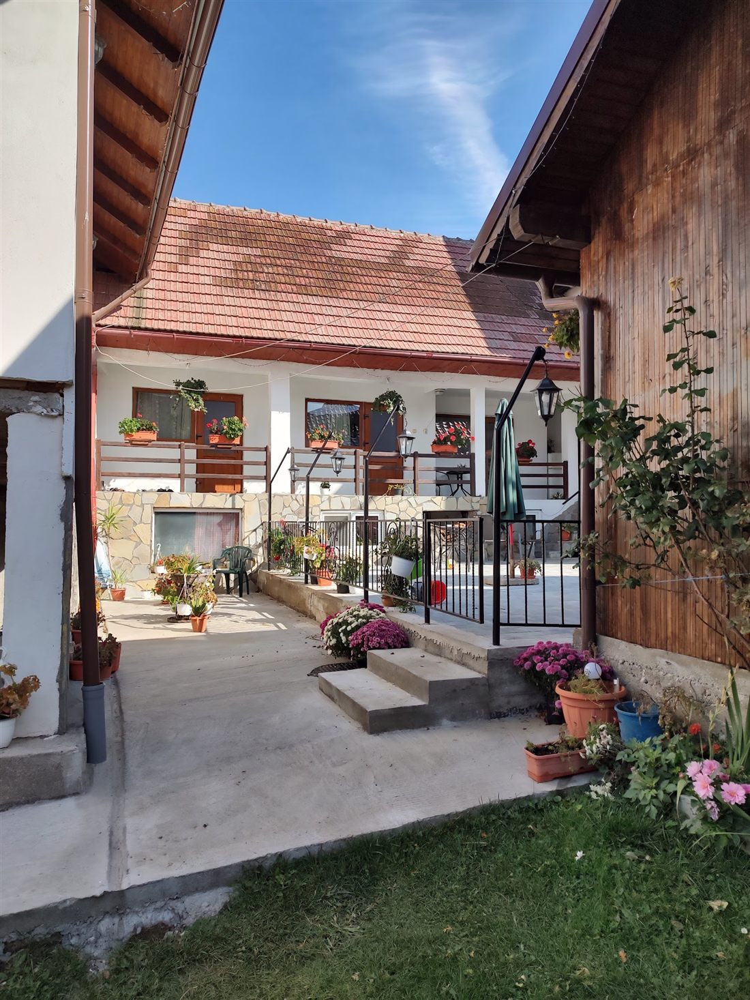
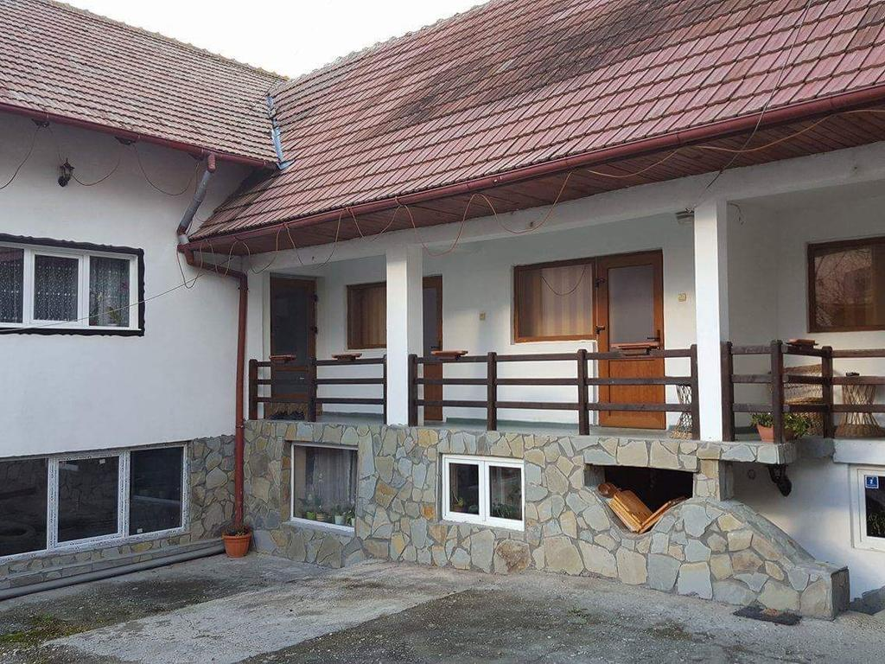
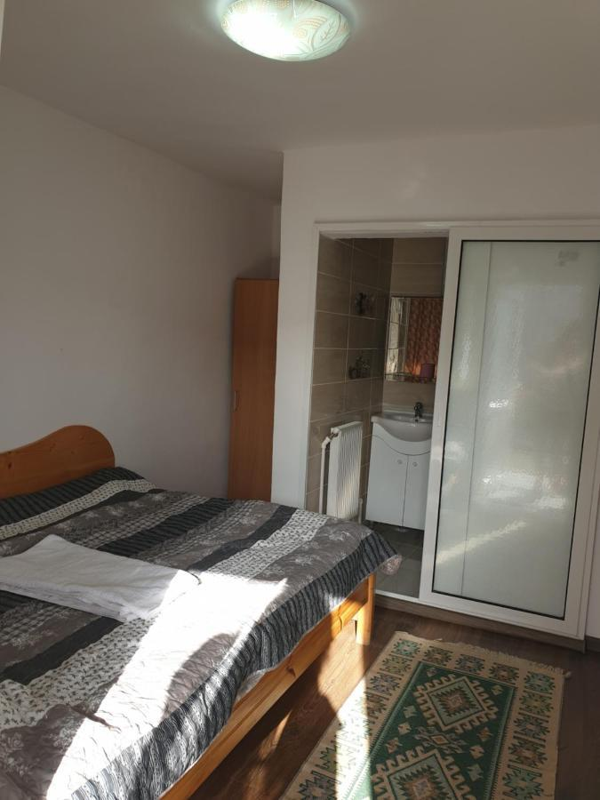
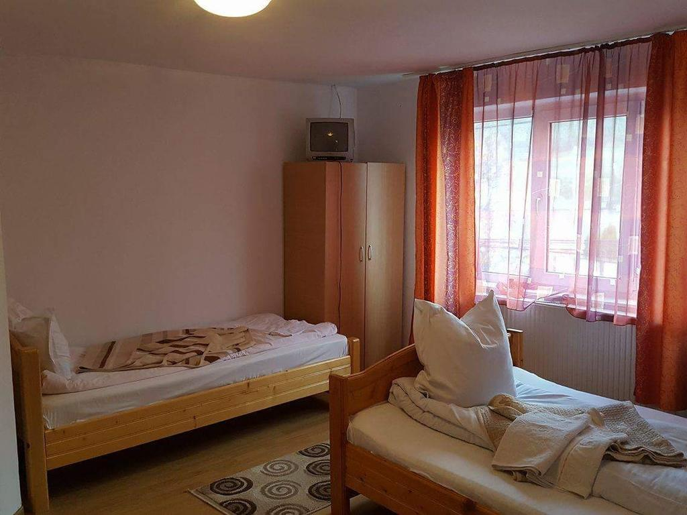

Cameră · Vale
Dublă cu vedere la munte
Un pat matrimonial cu fața la creastă, cu lumina dimineții venind peste Bran.
- Baie proprieîn cameră
- Aer condiționat✓
- Televizor LED✓
- Frigider și șifonierîn cameră
Șase camere, o masă lungă și un foișor în grădină, la poalele crestei Branului. Cristomar e o pensiune de familie unde ziua începe cu prăjiturile Cristinei și se termină cu munții care se liniștesc.

Pe strada principală din Bran, retrasă în spatele propriei porți: o pensiune caldă și îngrijită, ținută de familia care locuiește aici.
E o grădină cu un foișor acoperit, o terasă pentru serile lungi și o sală de mese pentru patruzeci de oameni, când e toată familia acasă. Recepția nu se închide cu adevărat niciodată — mereu e cineva treaz, cu lumina aprinsă și cafeaua la îndemână.

Curate, liniștite și calde — primul lucru pe care îl spun oaspeții. Aceeași grijă în fiecare cameră, altă priveliște spre vale.

Un pat matrimonial cu fața la creastă, cu lumina dimineții venind peste Bran.

Loc pentru toată familia, la câțiva pași de grădină și de foișor.

Două paturi de o persoană, pe partea liniștită a casei, aproape de masa de mic dejun.
Șase camere în total · mic dejun continental inclus în fiecare dimineață · cazare de la 13:00 · eliberare până la 11:00
„Un colț de rai, cu vedere la munte — și cea mai bună prăjitură pe care am mâncat-o vreodată."
— Un oaspete, despre prăjiturile Cristinei
Micul dejun e făcut în casă și inclus — pâine proaspătă, ouă, dulcețuri și tot ce a ieșit din cuptor în dimineața aceea. Seara se aprinde grătarul, sala de mese se umple, iar cina e mâncare românească de casă, la cerere.
Câteva imagini nearanjate — curtea, barul, holul și camerele, așa cum le găsești când ajungi.
Ești în mijlocul tuturor — castelul, munții și târgul — cu pensiunea drept locul liniștit în care te întorci.
Familia răspunde la telefon. Spuneți-le datele și câți sunteți — vă țin camera potrivită și pun masa.